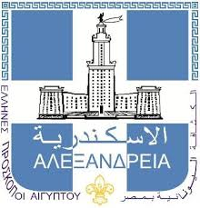

Καλώς ήρθατε στο Ελληνικό Προσκόπιο Αλεξάνδρειας!
Σας καλωσορίζουμε με τους Ελληνικούς Προσκόπους και την περιοχή μας.
Φωτογραφίες εορτών
Φωτογραφίες Έναρξης Προσκοπικής Χρονιάς
Φωτογραφίες Κατασκηνώσεων
ΣΤΟΙΧΕΙΑ ΠΕΡΙΠΕΤΕΙΑΣ